Великая Отечественная война
Память о героях
Это видео посвящено 80-ти летию освобождения Беларуси от немецко-фашистских захватчиков. Мы вспоминаем великие страницы истории и чествуем героев, сражавшихся за свободу Родины.
Беларусь всегда будет помнить своих защитников и передавать память о подвигах из поколения в поколение. Этот ролик — дань уважения героям и символ нашей благодарности.
Хроника освобождения Беларуси
Это видео посвящено освобождению Беларуси от оккупации немцко-фащисткими захватчиками, в том числе героическим событиям 1943-1944 годов.
 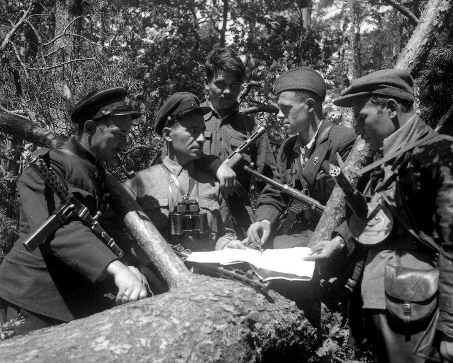
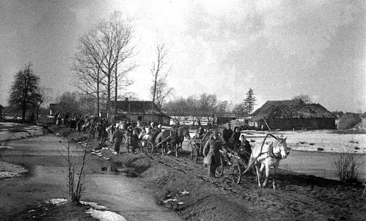
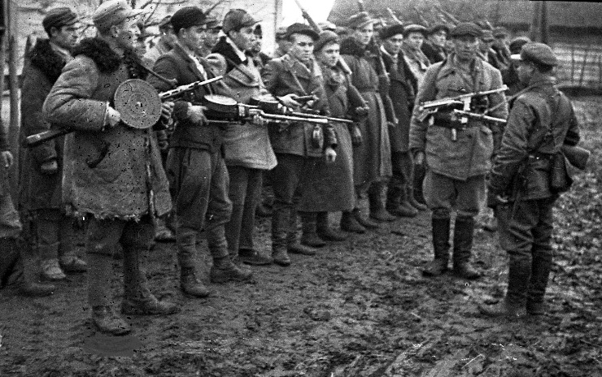
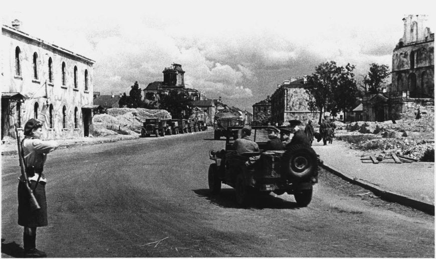
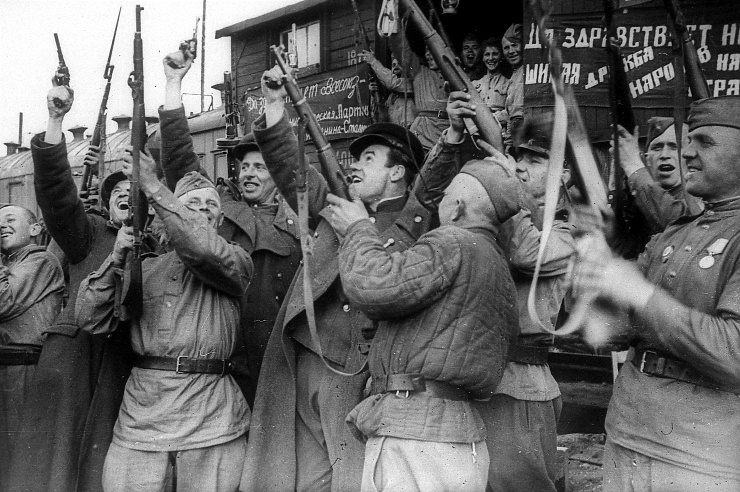
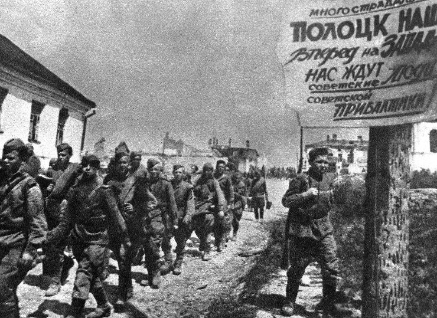
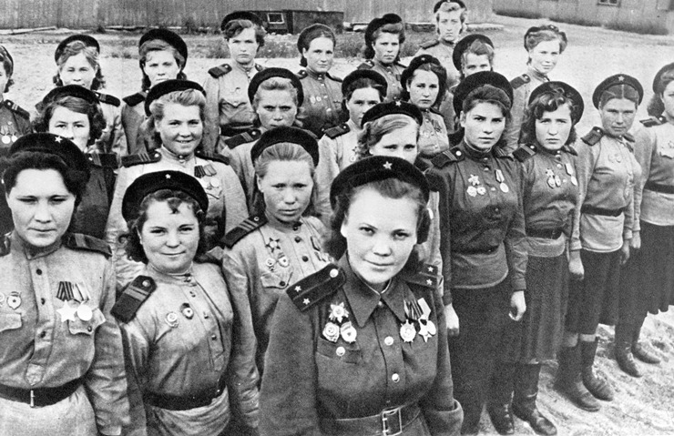
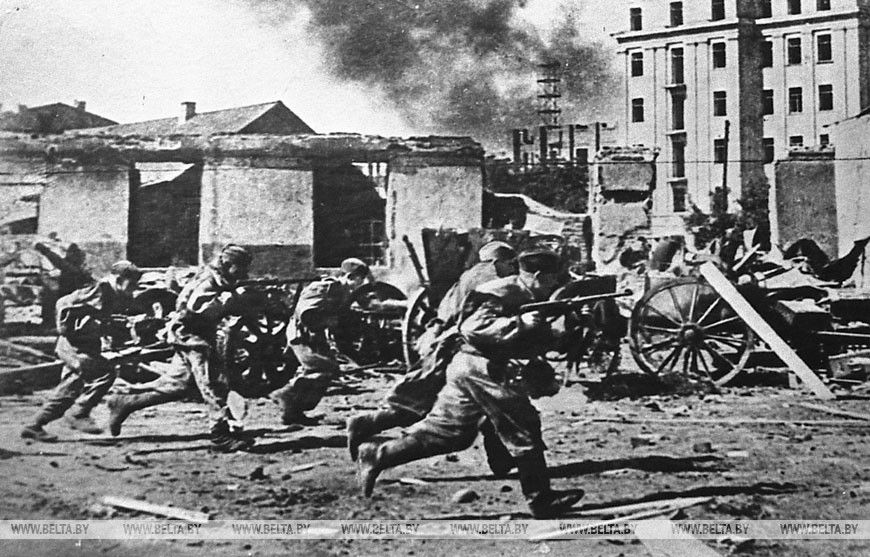
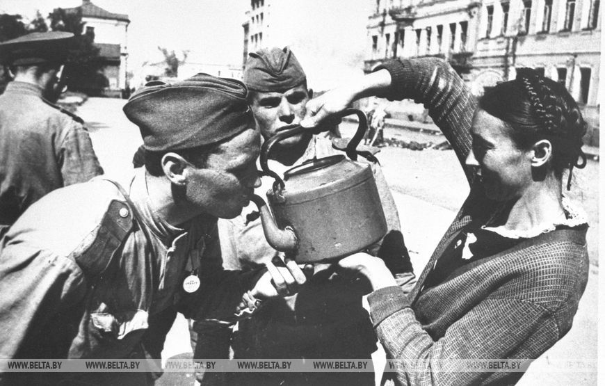
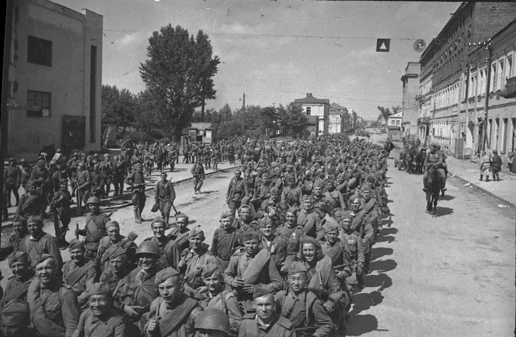
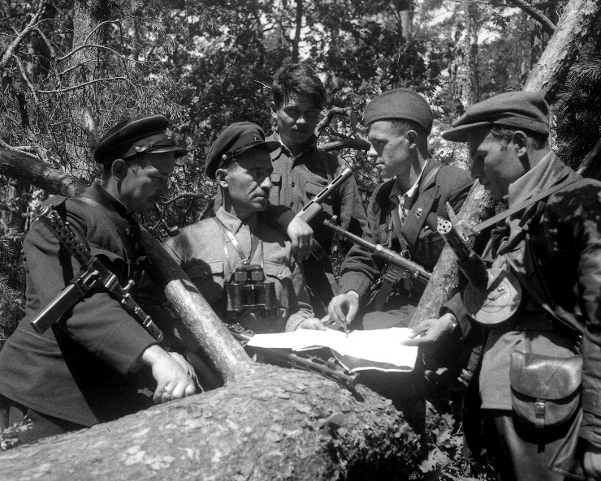
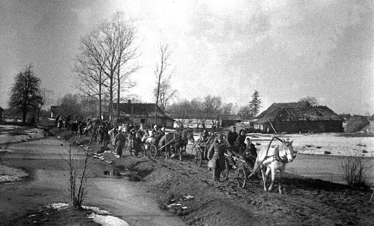
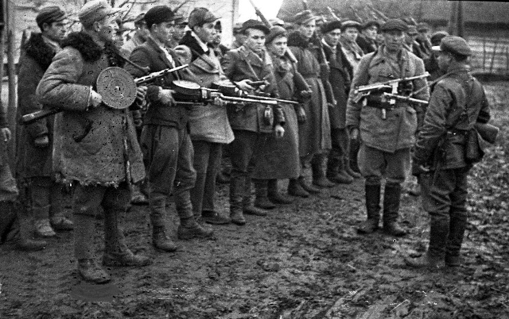
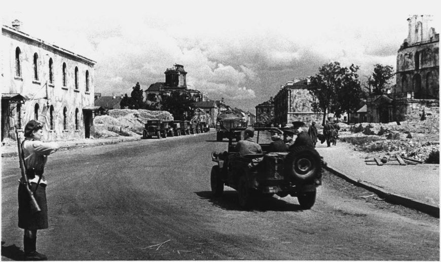
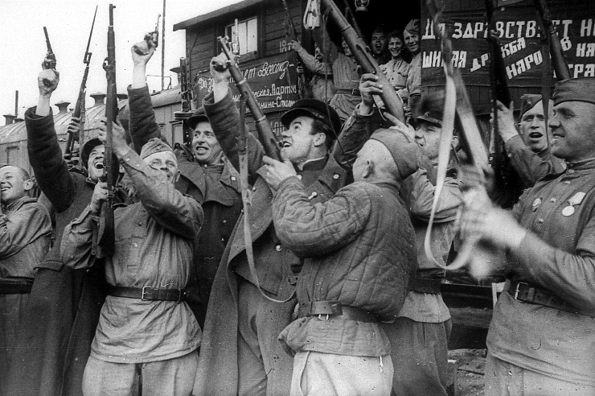
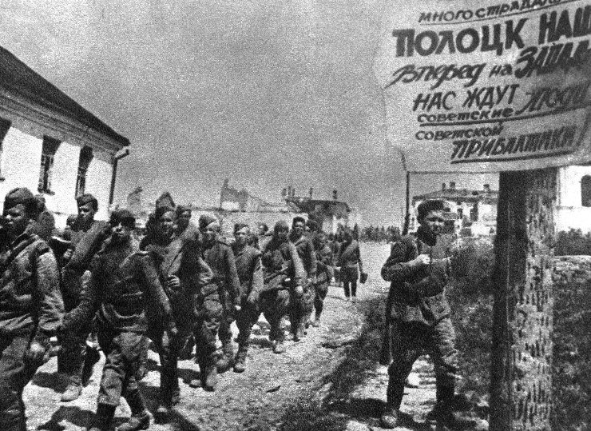
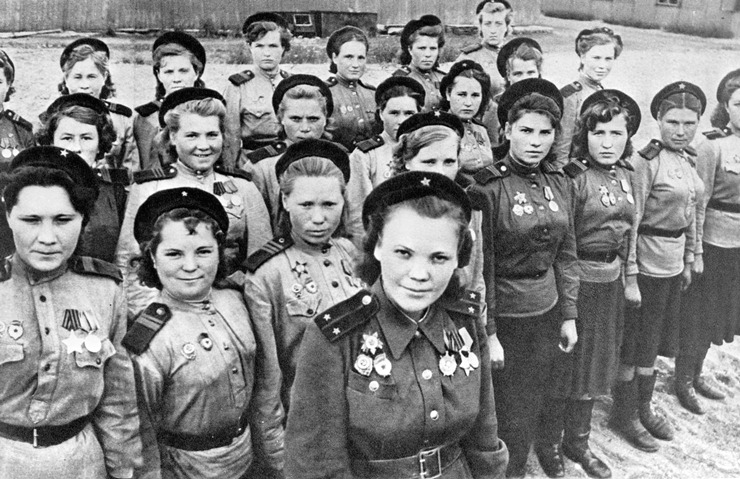
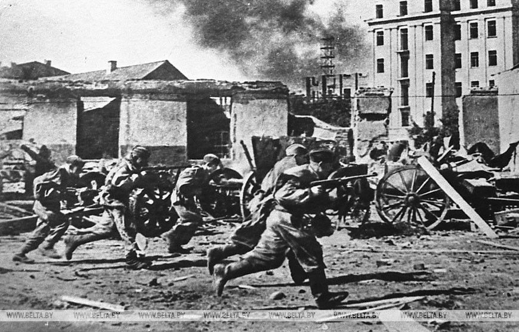
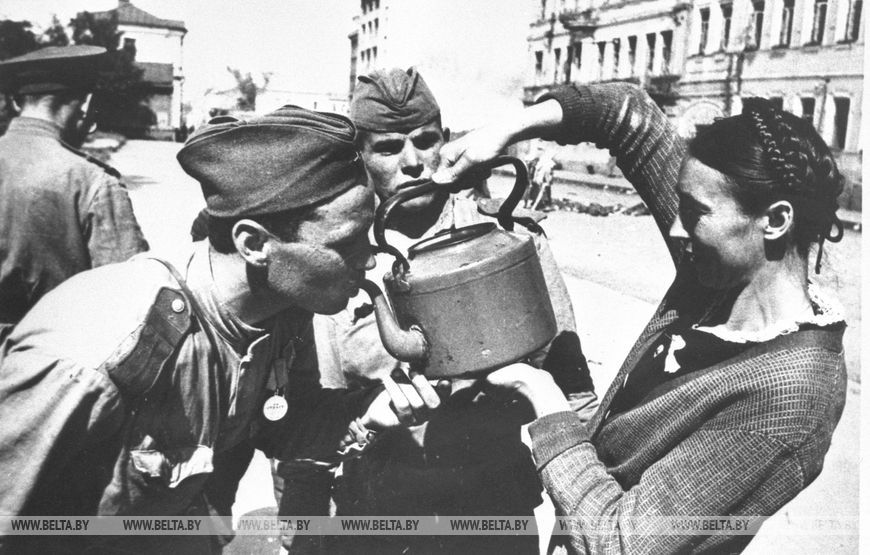
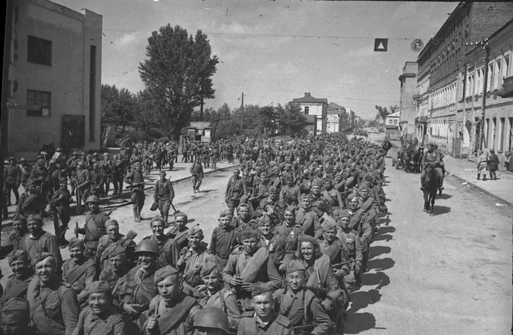
История освобождения Беларуси
Великая Отечественная война, начавшаяся 22 июня 1941 года, стала одним из самых трагических периодов в истории Беларуси. С первых дней войны белорусская земля оказалась в центре жестоких сражений. Нацистская Германия, стремясь к молниеносной победе, вторглась на территорию Советского Союза, сделав Беларусь одной из первых мишеней своей агрессии. Оккупация привела к огромным человеческим и материальным потерям: разрушению городов и деревень, массовому уничтожению мирного населения, грабежам и насилию. Беларусь стала одной из наиболее пострадавших республик, потеряв миллионы жизней.
Однако белорусы не смирились с оккупацией. Уже в первые дни войны началось сопротивление: создавались партизанские отряды, которые вели активную борьбу с врагом. Сотни смелых людей, несмотря на смертельную опасность, присоединялись к партизанскому движению. Они устраивали диверсии на железных дорогах, уничтожали вражеские склады, передавали советским войскам сведения о передвижениях врага. Каждая успешная операция поднимала дух народа и приближала долгожданное освобождение.
Освобождение Беларуси стало героической страницей в истории страны и кульминацией трехлетней борьбы против гитлеровских оккупантов. В 2023–2024 годах отмечается 80-летие начала этой освободительной миссии. Знаковым событием стало 23 сентября 1943 года — день, когда начался долгий и героический процесс освобождения белорусской земли. С этого времени до зимы 1944 года Красная Армия освободила 36 районных центров и два областных: Гомель и Мозырь.
Ключевым этапом борьбы за свободу Беларуси стала операция «Багратион», юбилей которой отмечается в 2024 году. Эта стратегическая наступательная операция, проведенная в июне–июле 1944 года, завершилась полным освобождением территории республики. Одним из самых значимых событий стало освобождение Минска 3 июля 1944 года, что ознаменовало окончание немецкой оккупации.
Во время ожесточенных боев советские солдаты проявляли героизм и стойкость. Каждая улица, каждый дом становились ареной ожесточенного сопротивления. Гомель, освобожденный одним из первых, стал символом мужества и стойкости. Город пережил разрушение и боль утрат, но его жители не сломились. Они объединились ради восстановления своих домов, улиц и предприятий, возродив родную землю из руин.
Восстановление Гомеля стало не только физическим процессом, но и актом духовного возрождения. Жители, потерявшие близких и дома, работали, вдохновленные общей целью — вернуть жизнь на свою землю. Гомель стал не только экономическим и культурным центром, но и символом победы над фашизмом, примером силы духа и единства народа.
Сегодня, отмечая годовщину освобождения Гомеля, мы вспоминаем героизм и самоотверженность тех, кто сражался за нашу свободу. Память о миллионах жизней, отданных за родину, навсегда останется в сердцах белорусов. Освобождение Гомеля стало важной вехой в истории борьбы за независимость и напоминанием о том, как единство и любовь к родной земле могут преодолеть самые тяжелые испытания.
Мы обязаны сохранить эту память и передать ее следующим поколениям, чтобы они осознавали ценность мира и свободы. Освобождение Беларуси — это не просто исторический факт, это символ стойкости народа и стремления к светлому будущему.